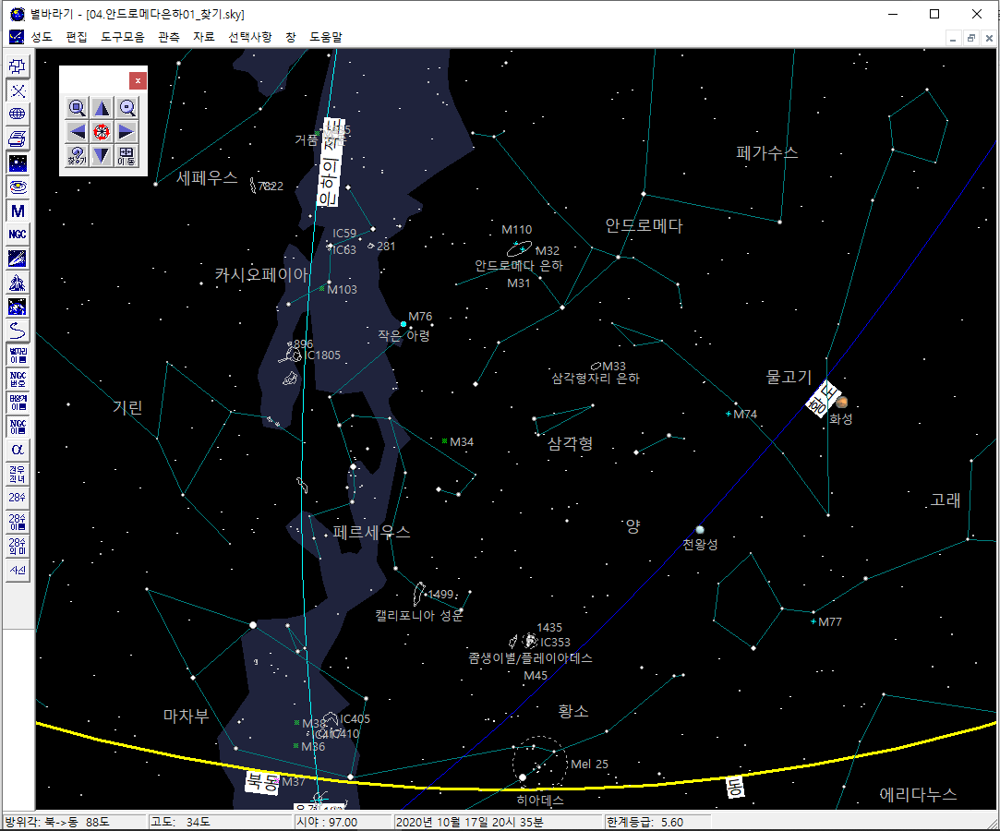
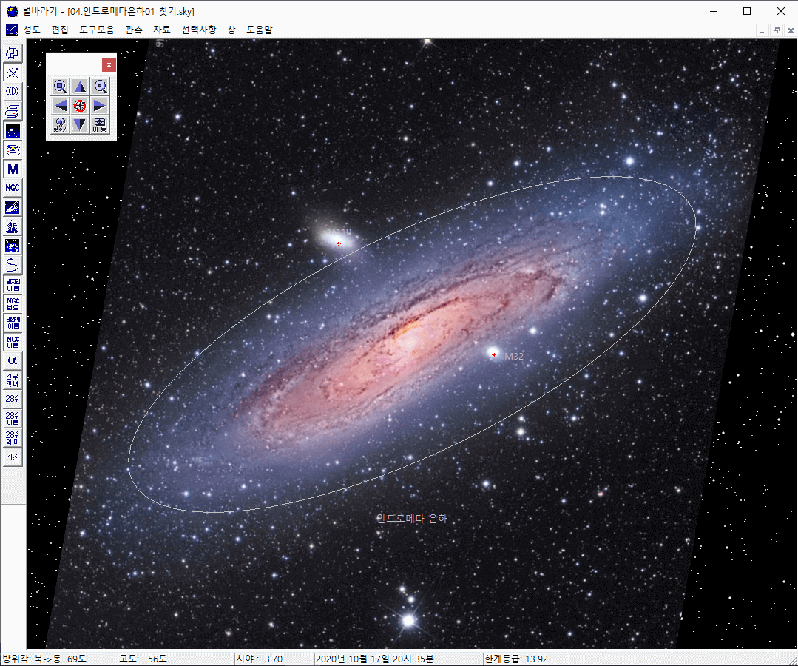

안드로메다 은하
안드로메다는 우주를 배경으로 하는 많은 이야기 속에 등장한다. 일본의 애니메이션 은하철도 999의 종착지도 안드로메다이고,
가디언즈 오브 갤럭시의 배경도 안드로메다이다 (M31로 시작하는 좌표가 많이 등장한다).
안드로메다 은하는 우리 은하와 비슷한 모습의 나선은하이다.
그러나 20세기 초까지만 해도 안드로메다 은하를 우리 은하에 속해 있는 일반적인 성운으로 인식했었다.
이때까지는 우리 은하가 우주 전체라고 생각하던 시기였다.
1925년 에드윈 허블은 안드로메다 대성운은 일반 성운이 아닌 또 다른 은하인 것을 증명했다.
이것은 우주의 크기가 우리 은하를 벗어나 수천만 배 더 커져야 한다는 것을 가리키는 대 사건이었다.
두 은하 모두 나선은하로 생긴 모습도 비슷하며, 비스듬히 누워 있는 것까지 닮아있다.
따라서, 안드로메다에 있는 생명체가 우리 은하를 관측한다면,
우리가 보는 안드로메다 은하와 비슷한 모습으로 절반 정도의 크기로 보일 것이다
맨눈 관측이 가능하다
안드로메다 은하는 인류가 맨눈으로 볼 수 있는 가장 먼 곳에 있는 대상이다.
또, 250만년 전에 출발한 안드로메다의 빛을 지금 우리가 보게 된다.
250만년 전이면 인류의 조상으로 생각되는 오스트랄로피테쿠스가 뛰어 다니던 시기이다.
멀리서 온 귀한 손님인만큼 직접 맞이하기는 쉽지 않다. 다음 순서를 추천한다.

- 평소에 별자리를 익혀 둔다. 별자리가 어려우면 행성의 위치라도 종종 봐 두고 별바라기에서 위치를 확인해 둔다. 금성/목성/토성은 서울 하늘에서도 잘 보인다.
- 관측 장소를 찾는다. 천문 관측, 은하수 관측 장소 등으로 검색하면 된다.
- 관측 장소까지 이동 수단도 준비한다.
- 가을철 별자리를 익히고, 안드로메다 은하의 위치를 확인해 둔다. 그림 참조
- 구름 없는 맑은 가을 날을 기다린다.
- 그리고, 사진에서 보았던 모습은 잊자. 맨눈으로는 그냥 아주 작은 구름 한 조각처럼 보인다.
- 관측 장소에 도착했다면, 반드시 모든 불을 끄고 10분 이상 암적응을 한다. 암적응 전과 후의 하늘은 전혀 다른 모습이다.
- 이제 그동한 쌓아 놓은 관측 경험을 십분 활용하여 안드로메다 은하를 찾아 본다.
- 처음엔 잘 알아 보지 못할 수도 있다. 그냥 별 또는 퉁퉁 부은 별처럼 보일 수도 있다.
- 만약 쌍안경이 있다면 활용해 보자. 훨씬 더 멋진 모습을 볼 수 있다.
- 혹, 안드로메다를 못 봤더라도 실망하지 말자. 조금만 더 기다리면 '좀생이별/플레이아데스'가 지평선 위로 떠오르는 것을 볼 수 있다. 안드로메다 보다 더 멋지고, 누구나 볼 수 있다.
샘플성도 활용법
- [성도][열기 ...] 메뉴 선택 후, '샘플성도' 디렉토리를 찾아간다.
- 파일명 '04.안드로메다은하01_찾기.sky'를 선택한다.
- 이것은 2020년 10월 17일 20시 35분의 하늘이다.
- 확대/축소 또는 방향 이동을 통해 안드로메다 위치를 확인한다.
- 그래도 안 보이면, 이동 도구모음에서 '찾기' 버튼은 누른다.
- 찾기 윈도에서 '메시에 대상', 'M31'을 차례로 선택한다.
기타 사항

- 안드로메다가 은하수 옆에 있는 것도 눈여겨 보자. 서로 비스듬히 누워서 마주보기때문에 은하수 옆에 안드로메다가 위치하게 된다.
- 안드로메다 은하를 중심에 두고 성도를 최대한 확대해 보자. 서로 비스듬히 누워서 마주보는 모습을 상상하며 은하를 살펴 보자.
- M32, M110도 찾아 보자. 이들은 안드로메다 은하의 딸린 은하들이다.
별바라기 홈 최종 변경: 2020년 05월 31일